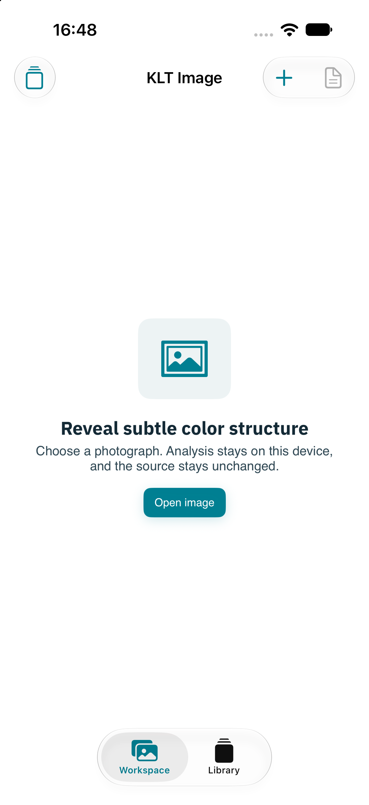
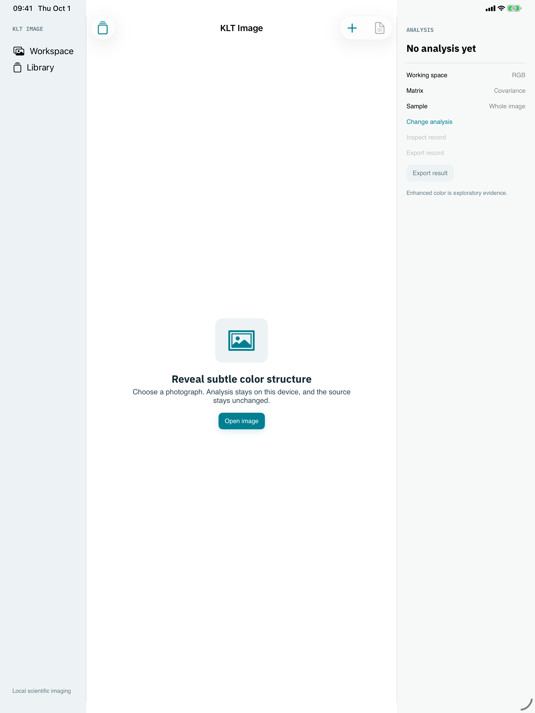

Development review · 1 October 2026
KLT Image for iPhone and iPad
These are native Simulator captures of the app's empty workspace on iPhone and wide iPad. The approved interactive design study shows the intended loaded comparison flow; its enhancement is illustrative. The shipped app calculates with KLTCore.

